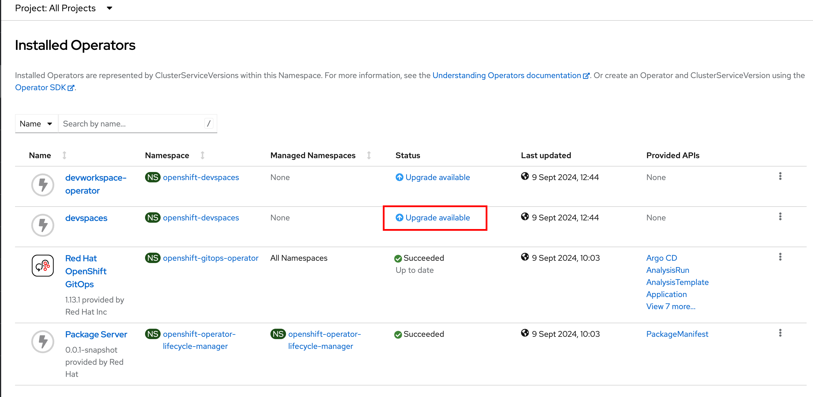
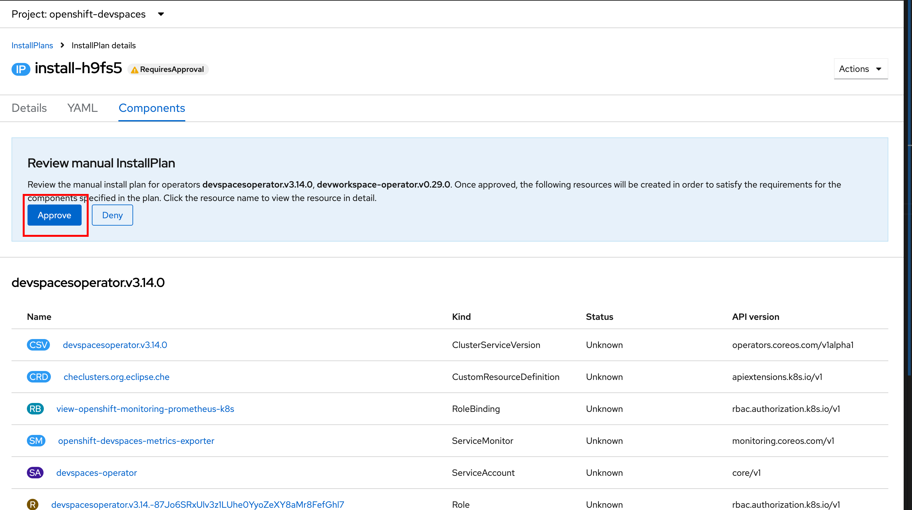
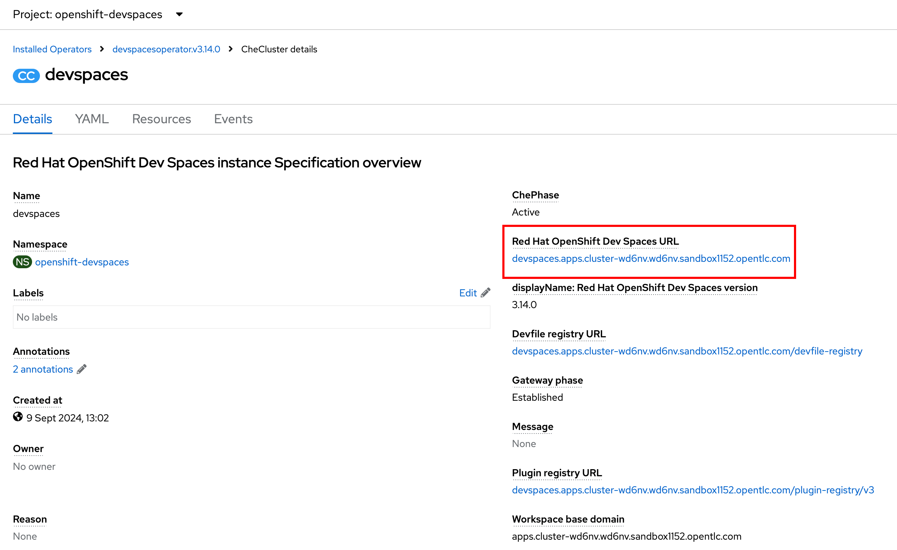

Installation of Dev Spaces Using CLI Tools
There are two ways you can install Dev Spaces using CLI tools. The first approach, using the oc CLI and YAML configuration files is for scenarios where you need fine-grained control over specific versions, and fine-tuning other related YAML configuration for your Dev Spaces deployment.
The second approach, using the dsc CLI (Dev Spaces client), is for quickly getting an instance of Dev Spaces up and running with a single one-liner command. You can always customize the instance to your liking at a later stage using the oc CLI and the OpenShift web console.
Installation using the oc CLI
In scenarios where you need to install Dev Spaces using automated scripts, you can use the oc CLI tool and YAML configuration files to install and customize a Dev Spaces instance.
Pre-requisites
-
You should have provisioned an OpenShift 4.16+ cluster as outlined in the
Classroom Environmentsection of the course home page. -
Download the OpenShift client
ocfor your platform from the OpenShift web console by clicking the "?" icon on the top right navigation bar. Uncompress the archive file, and then copy theocbinary for your platform to the system path (usually/usr/local/binon UNIX systems). -
Cluster administrator access to OpenShift (both CLI and web console). Verify that you can log in to the OpenShift web console and CLI as a cluster administrator.
Lab: Using oc CLI to install Dev Spaces
Using the oc CLI with YAML configuration files gives you more control and flexibility over how to install Dev Spaces. Whereas the web console and the dsc CLI are used to usually install the latest stable version of Dev Spaces, with this approach, you can install older versions, or specific product versions, and customize the OpenShift environment to fit your needs using the oc CLI approach.
If you have previously installed Dev Spaces using a different method, then run dsc server:delete --delete-all --delete-namespace -n openshift-devspaces as the admin user to completely remove the existing instance before you proceed with the installation.
|
-
Log in as the
adminuser with theocCLI$ oc login -u admin <OpenShift API URL>
-
Operators can be installed in two modes -
AutomaticandManual.Automaticis the simplest mode, where you do not need any manual intervention required and the operator is automatically installed. Inspect the configuration file at https://github.com/RedHatQuickCourses/devspaces-apps/blob/main/operator-cli/automatic-approval-operator.yaml. This file can be used to install Dev Spaces inAutomaticmode. If you choose this option, skip the next steps for manual mode and jump directly to the step where you instantiate a newCheClusterinstance. The https://github.com/RedHatQuickCourses/devspaces-apps/blob/main/operator-cli/checluster-cr.yaml file is used to create a newCheClusterresource. -
For manual installation mode, inspect and download the two YAML configuration files below. The first file defines a new namespace for installing Dev Spaces, along with the operator subscription, operator group, and related configuration to install a specific version (v3.14) of Dev Spaces. The second file defines a basic configuration for the
CheClusterresource and creates an instance nameddevspaces. -
Install the operator.
$ oc apply -f manual-approval-operator.yaml namespace/openshift-devspaces created operatorgroup.operators.coreos.com/devspaces-operator-group created subscription.operators.coreos.com/devworkspace-operator created subscription.operators.coreos.com/openshift-devspaces created
-
You chose
Manualapproval for the operator installation, which means you need to log in to the OpenShift web console andapprovethe installation. You do not need to do this if you chooseAutomaticapproval. Since we chose the manual approach, log in to the OpenShift web console as theadminuser and clickOperators > Installed Operators. Selectopenshift-devspacesin theProjectdrop-down. Click theUpgrade Availablelink for thedevspacesoperator.Figure 1. Approval Required for Manual Install Mode -
In the
InstallPlan Detailspage, clickPreview InstallPlan. You should see a list of resources that will be created. ClickApproveto proceed with the installation.Figure 2. Approve Install Plan -
Alternatively, you can also approve the install plan on the CLI using the following
ocCLI commands:$ oc get installplan -n openshift-devspaces # get the installplan name $ oc patch installplan \ <install_plan_name> \ --type json \ --patch '[{"op": "add", "path": "/spec/approved", "value": true}]' \ -n openshift-devspaces -
Switch back to the
Installed Operatorspage, and notice that the operator status now shows asInstalling. Wait and monitor the progress of the operators until the status shows asSucceeded. -
Now that the operators are installed, create a
CheClusterinstance.$ oc apply -f checluster-cr.yaml checluster.org.eclipse.che/devspaces created
-
Click
Operators > Installed Operatorsand then clickRed Hat OpenShift Dev Spaces instance Specificationin theProvided APIscolumn. You should see a newCheClusterinstance nameddevspaces. Clickdevspacesin theNamecolumn to view the details. Verify that theChePhasefield is markedActive, and theMessagefield is showingNone(indicating a successful installation without errors). Note down the URL value in theRed Hat OpenShift Dev Spaces URLfield.Figure 3. Dev Spaces instance createdYou can also fetch the dashboard URL using the
ocCLI:$ oc get checluster devspaces \ -n openshift-devspaces \ -o jsonpath='{.status.cheURL}' -
Navigate to the URL in the
Red Hat OpenShift Dev Spaces URLfield, and log in as theuser1to view the Dev Spaces dashboard.
Installation using the dsc CLI
While you can install Dev Spaces using the OpenShift oc CLI tool and YAML configuration files, Red Hat provides a convenient wrapper CLI tool called dsc (Dev Spaces client) to install and uninstall Dev Spaces.
Pre-requisites
-
You should have provisioned an OpenShift 4.16+ cluster as outlined in the
Classroom Environmentsection of the course home page. -
Download the OpenShift client
ocfor your platform from the OpenShift web console by clicking the "?" icon on the top right navigation bar. Uncompress the archive file, and then copy theocbinary for your platform to the system path (usually/usr/local/binon UNIX systems). -
Cluster administrator access to OpenShift (both CLI and web console). Verify that you can log in to the OpenShift web console and CLI as a cluster administrator.
-
Download the latest
dsctool for your operating system from https://developers.redhat.com/products/openshift-dev-spaces/download.-
Extract the archive file and copy the
dscdirectory to a suitable location in your workstation (/usr/localis a good choice). -
Add the
/usr/local/dsc/binfolder to your operating systemPATHenvironment variable
-
Lab: Using dsc CLI to install Dev Spaces
If you have previously installed Dev Spaces using a different method, then run dsc server:delete --delete-all --delete-namespace -n openshift-devspaces as the admin user to completely remove the existing instance before you proceed with the installation.
|
-
The
dsctool uses the login context provided by theocCLI tool to manage Dev Spaces instances. Log in as theadminuser with theocCLI before runningdsc. Verify that you can execute thedscbinary file on your operating system.$ oc login -u admin <OpenShift API URL> $ dsc version dsc/3.15.0-CI darwin-arm64 node-v18.20.2
Use the dsc server --helpcommand to list some useful commands to manage Dev Spaces instances. -
Create the
openshift-devspacesnamespace using theocCLI as theadminuser$ oc create namespace openshift-devspaces namespace/openshift-devspaces created
-
Doing a basic install of Dev Spaces with simple defaults is a one-line command. The command will take a few minutes to run and will show the status of the installation as it runs.
$ dsc server:deploy -p openshift -n openshift-devspaces › Current Kubernetes context: 'default/api-cluster...' ✔ Verify Kubernetes API...[1.29] ✔ OpenShift version...[4.16] ✔ Openshift preflight checklist ✔ Verify if oc is installed...[OK] ✔ Verify if openshift is running...[OK] ✔ Create Namespace openshift-devspaces...[Exists] ✔ Start following Red Hat OpenShift Dev Spaces installation logs...[OK] ✔ Deploy Red Hat OpenShift Dev Spaces ✔ Create Subscription devspaces-subscription...[Created] ✔ Red Hat OpenShift Dev Spaces Operator pod bootstrap ✔ Scheduling...[OK] ✔ Downloading images...[OK] ✔ Starting...[OK] ✔ Fetch CheCluster sample from a CSV...[OK] ✔ Create CheCluster Custom Resource...[Created] ✔ Wait for Red Hat OpenShift Dev Spaces ready ✔ Devfile Registry pod bootstrap ✔ Scheduling...[OK] ✔ Downloading images...[OK] ✔ Starting...[OK] ✔ Plugin Registry pod bootstrap ✔ Scheduling...[OK] ✔ Downloading images...[OK] ✔ Starting...[OK] ✔ Dashboard pod bootstrap ✔ Scheduling...[OK] ✔ Downloading images...[OK] ✔ Starting...[OK] ✔ Gateway pod bootstrap ✔ Scheduling...[OK] ✔ Downloading images...[OK] ✔ Starting...[OK] ✔ Red Hat OpenShift Dev Spaces Server pod bootstrap ✔ Scheduling...[OK] ✔ Downloading images...[OK] ✔ Starting...[OK] ✔ Wait Red Hat OpenShift Dev Spaces active...[OK] ✔ Retrieving Red Hat OpenShift Dev Spaces self-signed CA certificate... ✔ Prepare post installation output...[OK] ✔ Show important messages ✔ Red Hat OpenShift Dev Spaces 3.15.0 has been successfully deployed. ... Command server:deploy has completed successfully in 02:51.Use the dsc server:deploy --helpcommand to list the full options to control the installation. In this course, we will configure a basic instance and then customize it using YAML configuration files. -
The previous command should print a lot of details about your Dev Spaces instance if the installation was successful. You can also run the
dsc server:statuscommand to get the URL of the Dev Spaces dashboard$ dsc server:status Red Hat OpenShift Dev Spaces Version : 3.15.0 Red Hat OpenShift Dev Spaces Url : https://devspaces.apps.cluster-<guid>.<guid>.sandbox1152.opentlc.com/dashboard/